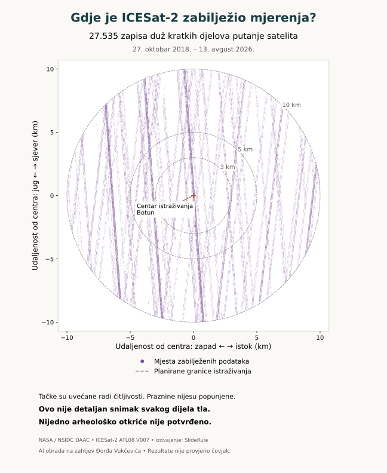
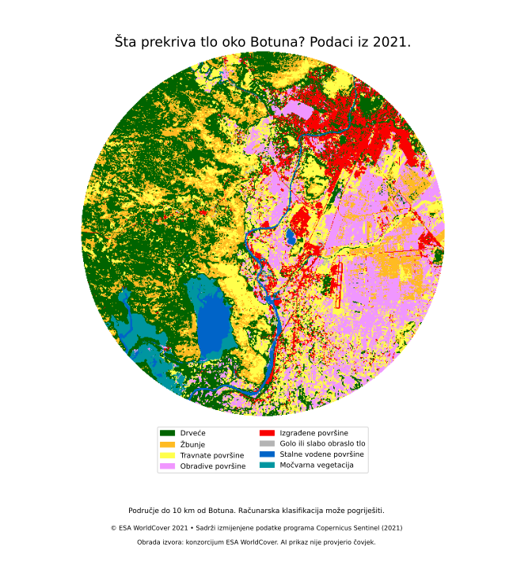
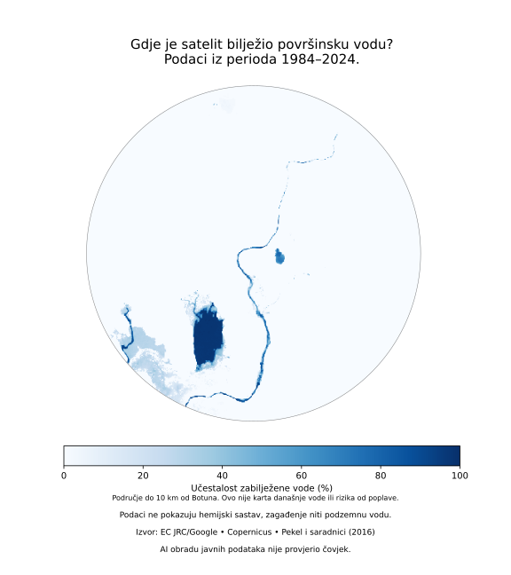
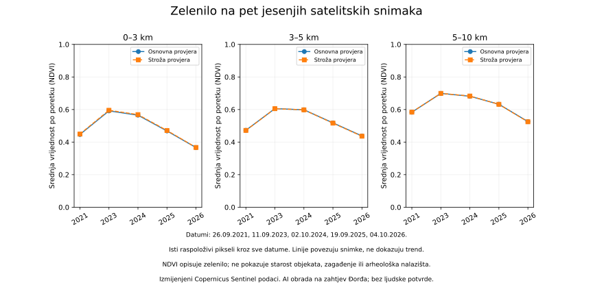
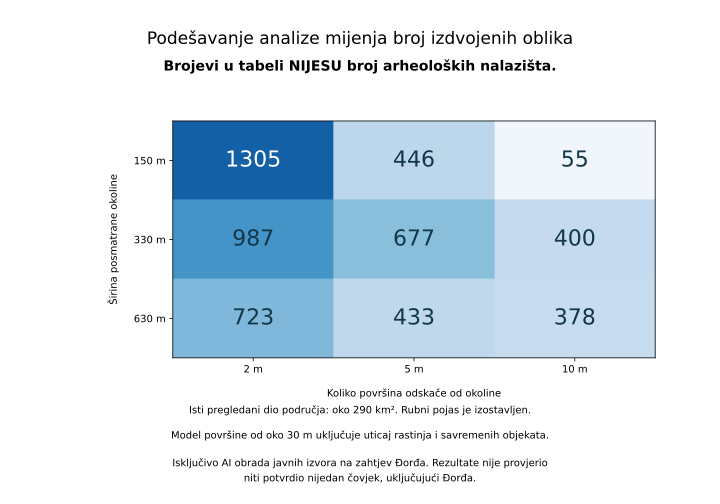
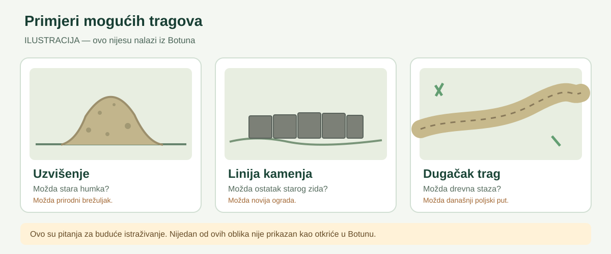

Pronađena su laserska mjerenja oko Botuna
AI agenti su obradili 98.448 GEDI mjerenja i 27.535 zapisa ICESat-2. To je potvrda da u preuzetim javnim podacima postoje mjerenja za naš kraj, a ne dokaz stare građevine.
Ovaj sajt, njegov tekst, mape i analize pripremili su isključivo AI agenti, na zahtjev Đorđa Vukčevića, koristeći isključivo javno dostupne izvore, uključujući podatke NASA-e, programa Copernicus i USGS-a. Rezultate, analize i zaključke ovog projekta nije provjerio niti potvrdio nijedan čovjek — ni Đorđe Vukčević ni bilo koji drugi istraživač ili stručnjak. Sve je preliminarno i ne predstavlja potvrdu arheološkog otkrića.
Ovdje jednostavnim jezikom prikazujemo šta je preuzeto, šta brojevi znače i šta iz njih ne možemo zaključiti. Podaci i zaključci našeg projekta nijesu nezavisno provjereni od strane ljudi.
AI agenti su obradili 98.448 GEDI mjerenja i 27.535 zapisa ICESat-2. To je potvrda da u preuzetim javnim podacima postoje mjerenja za naš kraj, a ne dokaz stare građevine.
U dosadašnjoj analizi nije izdvojen nijedan novi lokalitet koji bi bilo odgovorno predstaviti kao otkriće. To ne znači da takvi ostaci ne postoje.
Snimci iz aprila i oktobra pokazuju sezonske promjene. Usjevi, navodnjavanje i vremenske prilike mogu objasniti razlike, zato ih ne predstavljamo kao arheološki trag.
Grubi modeli visine nijesu dovoljno detaljni za pouzdano prepoznavanje malih zidova i humki. To je ograničenje postojećih podataka, ne dokaz da arheoloških ostataka nema.
Ove mape prikazuju stvarna mjerenja iz našeg istraživanja, a ne zamišljene građevine.

Prikazano je 98.448 zabilježenih mjerenja. Svaka tačka označava mjesto mjerenja, a ne arheološko otkriće. Tačke su uvećane kako bi se bolje vidjele; između njih ostaju praznine.
Izvor: NASA, GEDI L2A V002; izdvajanje podataka: SlideRule. Prikaz izradili AI agenti.
Otvori i uvećaj mapu ↗
Prikazano je 27.535 zapisa duž satelitskih putanja. Svaki sažima kratki dio puta koji je satelit posmatrao. Nije riječ o neprekidnoj mapi tla ni o pronađenim građevinama.
Izvor: NASA, ICESat-2 ATL08 V007; izdvajanje podataka: SlideRule. Prikaz izradili AI agenti.
Otvori i uvećaj mapu ↗Mjerenja su nastajala tokom više godina, ali njima nije ravnomjerno pregledan svaki dio zemljišta. Ni NASA ni druga institucija nijesu potvrdile naše zaključke. Prikazi su rezultat rada AI agenata i čekaju nezavisnu ljudsku provjeru.
Ovdje vidite slike i mape napravljene na osnovu javnih podataka. Nijesu nacrtane kao zamišljena arheološka otkrića.

Šta vidimo? Boje prikazuju visinu zemljišta — ravnicu, brda i okolna uzvišenja.
Šta možemo reći? Ravnica i uzvišenja oko Botuna jasno se razlikuju po visini.
Šta ne možemo zaključiti? Ovo je regionalni model sa detaljima od približno 30 metara. Njime se ne mogu potvrditi male humke, zidovi ili temelji. Osnovna mjerenja potiču iz 2000. godine.
NASA JPL / LP DAAC • NASADEM V001. Prikaz pripremili AI agenti, bez ljudske provjere.
Otvori i uvećaj sliku ↗
Šta vidimo? Pravi satelitski snimci istog prostora: 25. april i 4. oktobar 2026.
Šta možemo reći? Predio izgleda drugačije u proljeće i jesen.
Šta ne možemo zaključiti? Razlike mogu nastati zbog godišnjeg doba, poljoprivrede i vremenskih prilika. Sive zone su dijelovi koje je automatska obrada izostavila. Ovo nije dokaz arheoloških ostataka.
Izmijenjeni podaci Copernicus Sentinel (2026). Prikaz pripremili AI agenti, bez ljudske provjere.
Otvori i uvećaj sliku ↗Važno: Prikaze su izradili AI agenti, koristeći javno dostupne podatke NASA-e i programa Copernicus. Nijedan čovjek nije provjerio njihovu obradu ili zaključke. NASA i Copernicus nijesu potvrdili rezultate ovog projekta.
Tri odvojene zone pokazuju gdje imamo zapise. Broj zapisa nije površina detaljno snimljenog zemljišta.
Površina zone: oko 28,3 km².
Tipična vrijednost visine u grubom NASADEM modelu (medijana): oko 26,2 m.
Površina zone: oko 50,3 km².
Tipična vrijednost visine u grubom NASADEM modelu (medijana): oko 38,3 m.
Površina zone: oko 235,6 km².
Tipična vrijednost visine u grubom NASADEM modelu (medijana): oko 50,6 m.
Šta brojevi ne pokazuju? GEDI mjeri pojedinačne tačke, dok ICESat-2 bilježi kraće djelove putanje — njihovi brojevi nijesu ista mjera. Navedene visine su iz modela približne rezolucije 30 metara, a nijesu dokaz da se tlo mijenjalo tokom godina.
Za isti prostor upoređen je računarski pokazatelj zelenila (NDVI) na dva snimka. Negativna vrijednost znači da je indeks na izabranom kasnijem snimku bio niži. To ne dokazuje trajnu promjenu, njen uzrok ili arheologiju.
| Zona | Sentinel-2 25. april → 4. oktobar 2026. | Landsat 25. septembar 2016. → 5. septembar 2026. |
|---|---|---|
| 0–3 km | -0,178 | -0,174 |
| 3–5 km | -0,152 | -0,106 |
| 5–10 km | -0,151 | -0,086 |
Oprez: Dva datuma nijesu dugoročni trend. Razlike mogu poticati od godišnjeg doba, poljoprivrednih radova, padavina i načina obrade. Sentinel-2 i Landsat koriste se u odvojenim poređenjima, ne kao ista vrsta mjerenja. Niži indeks nije dokaz zagađenja niti arheološkog nalazišta.
Izvori: NASA GEDI, ICESat-2, NASADEM, Sentinel-2 i Landsat. Sve rezultate obradili su AI agenti; nijedan čovjek ih nije potvrdio.
Ove karte proširuju istraživanje šireg područja Botuna. One nijesu detektori drevnih objekata niti mjerenja zagađenja.

Podaci prikazuju računarski procijenjen pokrivač zemljišta iz 2021, ne današnje stanje, vlasništvo ili arheološke ostatke. Klasifikacija može pogriješiti. Rezultate naše obrade nije provjerio čovjek.
Izvor: ESA WorldCover · Zanaga i saradnici (2022), podaci iz 2021, CC BY 4.0. Izmijenjeni Copernicus Sentinel podaci, obrada AI agenata.
Otvori veliku kartu ↗
Istorijski pregled učestalosti površinske vode od 1984. do 2024. Ne pokazuje današnje stanje, hemijski sastav, podzemnu vodu ili rizik od poplave. Rezultate AI obrade nije provjerio čovjek.
Izvor: EC JRC/Google · Pekel i saradnici (2016). Obrada AI agenata; podaci nijesu mjerenje današnje vode.
Otvori veliku kartu ↗Kako koristiti ove prikaze? Karta pokrivača prikazuje automatsku procjenu za 2021. godinu, a mapa vode period 1984–2024. Nijesu katastar, karta podzemne vode, mjerenje zagađenja ili dokaz arheološkog nalaza. Rezultate AI obrade nije provjerio nijedan čovjek.
Upoređeni su snimci iz 2021, 2023, 2024, 2025. i 2026. za tri zone oko Botuna, uz isti prostor i provjeru prihvatljivih piksela.

Prikazane su srednje vrijednosti po poretku za iste raspoložive piksele. Sezona, obrada zemljišta i uslovi snimanja utiču na razlike; linije ne dokazuju trend. Stroža provjera izostavlja i okolinu nejasnih ili neupotrebljivih piksela.
Važno: Jedan snimak godišnje, snimljen različitih septembarskih ili oktobarskih dana, ne daje pouzdan višegodišnji trend. Ne mjeri zagađenje niti potvrđuje arheološke ostatke. Za 2022. nije pronađen odgovarajući zapis u prethodnoj ograničenoj pretrazi; to ne znači da snimci ne postoje.
Sadrži izmijenjene podatke Copernicus Sentinel (2021, 2023–2026). Satelitski podaci ↗ · Uslovi korišćenja ↗. Rezultate nijedan čovjek nije provjerio.
Otvori cijeli prikaz ↗Program je tražio neobične oblike visine na gruboj karti. Ovo je početni eksperiment, ne završena arheološka analiza.
Računar je označio dijelove reljefa koji ispunjavaju zadate uslove, ali to nijesu identifikovane humke, zidovi niti potvrđena nalazišta.
Jedan probni uslov bio je koliko se neki oblik razlikuje po visini od okolnog terena. Stroži uslov izdvaja manje površina.
Uslovi su bili eksperimentalni. Ovi brojevi nijesu broj arheoloških mjesta.
Zašto nema tačaka na mapi? To su probni rezultati na modelu visine od oko 30 metara. Priroda, drveće, usjevi, moderne građevine i greške podataka mogu dati slične oblike. Njihovo objavljivanje kao arheoloških lokacija bilo bi pogrešno. Dalja nezavisna analiza je u toku; nije bilo stručne ljudske provjere.

Isti dio područja daje različit broj oblika kada promijenimo način poređenja sa okolinom. Zato oblik koji program izdvoji sam po sebi nije dokaz ljudske gradnje ili starosti.
U proširenom eksperimentu broj računarski izdvojenih oblika mijenja se od 55 do 1.305 pri devet podešavanja. To su površinski obrasci, ne arheološka nalazišta. Uvećaj prikaz ↗
AI agent je pregledao stvarna GEDI i ICESat-2 mjerenja bez izmišljanja neprekidne detaljne karte terena. Program je izdvojio 341 niz mjerenja sa određenim razlikama u visini. To nijesu 341 mjesto niti 341 arheološki kandidat.
Dva manja primjera dodatno su provjerena. Jedan ima snažno moguće savremeno industrijsko objašnjenje, drugi zavisi od računskog načina opisivanja okolnog zemljišta. Nema dovoljno dokaza da se bilo koji primjer proglasi arheološkim ostatkom. Bez nezavisne ljudske i terenske provjere, zaključci ostaju preliminarni.
Ovo su primjeri koje ćemo pokušati da razlikujemo, a ne nalazi otkriveni na satelitskim slikama.

Trenutno nemamo konkretan novi arheološki kandidat za prikazivanje. Ako AI agenti kasnije pronađu nešto neobično, prije javne objave slijede poređenje sa postojećim izvorima i stručna provjera. Osjetljive koordinate nećemo javno objavljivati.
Laserski podaci iz svemira često pokazuju visinu na pojedinim mjestima. Za male zidove, humke ili temelje obično nam je potrebna mnogo detaljnija mapa terena.
Učitavanje pregleda javno dostupnih podataka...
Ovo nijesu mjesta koja je pronašao naš AI projekat. Imena i osnovi navođenja preuzeti su iz opštinskog planskog dokumenta.
Kako je navedeno u dokumentu: SZ NPSJ 2017.
Ovaj zapis ne potvrđuje starost, iskopavanje, tačan položaj ili pravni status objekta.
Kako je navedeno u dokumentu: Inicijativa
Ovaj zapis ne potvrđuje starost, iskopavanje, tačan položaj ili pravni status objekta.
Kako je navedeno u dokumentu: Inicijativa
Ovaj zapis ne potvrđuje starost, iskopavanje, tačan položaj ili pravni status objekta.
Kako je navedeno u dokumentu: Inicijativa
Ovaj zapis ne potvrđuje starost, iskopavanje, tačan položaj ili pravni status objekta.
Kako je navedeno u dokumentu: Stručna saznanja
Ovaj zapis ne potvrđuje starost, iskopavanje, tačan položaj ili pravni status objekta.
Kako je navedeno u dokumentu: Stručna saznanja
Ovaj zapis ne potvrđuje starost, iskopavanje, tačan položaj ili pravni status objekta.
Izrazi „Inicijativa“, „Stručna saznanja“ i „SZ NPSJ 2017.“ predstavljaju osnove navođenja iz samog dokumenta. Nijesu automatski potvrda zakonske zaštite, datiranja, istraženosti ili preciznih granica. Ovo nije potpun arheološki registar. AI sažetak nije prošao ljudsku provjeru.
LiDAR je mjerenje laserom. Satelit pošalje laserski impuls i prati njegov povratak. NASA GEDI je u našem izabranom području zabilježila 98.448 pojedinačnih mjerenja u preuzetom skupu. Od njih je 31.327 zadovoljilo početne računarske uslove kvaliteta. To ne znači da je 31.327 mjesta arheološki zanimljivo ili da je cijelo područje detaljno snimljeno.
To su kratki djelovi putanja duž kojih satelit prikuplja informacije o visini tla i vegetacije. U našem skupu postoji 27.535 takvih djelova. Oni nijesu fotografije naselja niti kompletan laserski model terena.
Podaci koje smo dosad obradili nijesu dovoljno detaljni da pouzdano pokažu male zidove, humke ili temelje. Osim toga, slične oblike mogu stvarati priroda, poljoprivreda i moderna gradnja. Za pouzdanu tvrdnju neophodni su dodatni podaci i stručna ljudska provjera.